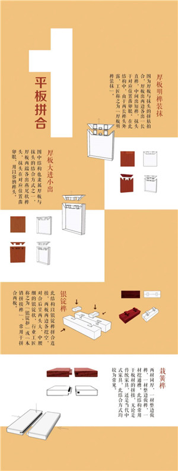

中国榫卯结构
从接头形状到完整器物
本调研覆盖传统家具与木构中常用的接合家族、代表变体、组合构造与选型逻辑。“完整”指覆盖主要设计问题；不把地域、时代和作坊中的全部变体宣称为已穷尽。书籍中的“65种”和展览中的“百余种”采用的统计口径不同，也常将接头、销楔和整套构造并列。[1][2]
先分清三个层级
接头：直榫、燕尾榫、格角榫等，描述局部接合形状。锁紧辅件：销、楔、走马销等，描述定位和防脱方式。组合构造：攒边装板、霸王枨、斗拱等，描述几件甚至多层构件如何组织。霸王枨是斜撑构件；斗拱是由斗、栱等构件组合的系统，不能只按一个“榫头形状”理解。[3][4]
同时还要分清：明榫／透榫与暗榫／闷榫主要区别在于榫头是否外露；单榫与双榫说的是榫舌数量；方榫与圆榫说的是截面。它们可以组合，例如“带穿销的双透直榫”，不应每加一个形容词就当成完全不同的原理。[5][6]
“龙凤榫”“银锭榫”等称谓存在语境差别。本报告用明确形状＋使用部位辅助名称：银锭形蝴蝶键不直接等同所有燕尾连接；拼板语境的龙凤榫与建筑文献中的同名做法也不能直接互换。北京市文物局的祾恩门修缮记录就将上下两片椽椀的榫合称为龙凤榫。[7]
代表结构目录
下表是选型用的家族和代表变体，共34项；不代表34个相互排斥的古代标准名称。“适合”与难度判断是设计推导，不是承载试验结果。
A · 杆件插接与交叉：最基础的动作
| 类型 | 长什么样／如何接合 | 适合什么 | 设计要点 |
|---|---|---|---|
| 01 透直榫 | 矩形榫舌穿过另一构件的卯眼，端头可见。 | 凳腿与横撑、架体、教学样块。 | 插入方向最容易读懂；不能仅凭“已插入”就假定防拔。 |
| 02 暗直榫 | 榫舌进入不贯通的孔，外表藏住接头。 | 柜框、椅架、要求表面完整的面。 | 需要端面或剖面提示，避免玩家看不见卯底。 |
| 03 双榫／多榫 | 同一接头上并列两个或多个榫舌。 | 较宽横材与腿、框的连接。 | 强调多个榫眼同时对准；并非榫越多就必然越强。 |
| 04 圆榫与独立木销 | 圆柱榫进入圆孔；独立木销则连接两边的孔。 | 定位、辅助加固、预制构件组装。 | 整体削出的圆榫与另加木销应分开表示。 |
| 05 穿销锁榫 | 直榫到位后，再用横向销穿过对正的孔。 | 需要明确“插好—再锁定”的横撑。 | 销孔与取销空间必须可达。 |
| 06 破头楔类 | 榫端开缝，再打入楔子使端部张紧。 | 适合以楔紧为收尾的结构展示。 | 与可直接拔出的锁销不同，不适合随意反复拆装。 |
| 07 半搭接 | 两材各削去一部分厚度后叠合。 | 简易框架、底座、交接练习。 | 常见等厚形式各去半厚；仍须考虑防分离。 |
| 08 十字搭接 | 半搭接发生在两材中部，形成十字。 | 交叉撑、格栅、花架。 | 容易观察交叉关系；避免把削薄后的截面忽略。 |
| 09 丁字搭接 | 一根杆件端部接入另一根中部。 | 中间横撑、分格框。 | 可用于区分端部连接与中部连接。 |
基本类型与形态依据：故宫公开资料、传统家具专著目录，以及穿销节点研究。[1][5][6][8]
B · 板件、箱体与面板：不仅是把两块板粘起来
| 类型 | 长什么样／如何接合 | 适合什么 | 设计要点 |
|---|---|---|---|
| 10 明燕尾 | 梯形榫与对应槽口交错，箱角外部可见。 | 抽屉、木盒、收藏箱。 | 燕尾限制特定方向脱开，装入仍需开放路径。 |
| 11 半隐燕尾 | 一侧保留表皮遮住接头，另一侧可见。 | 希望正面干净的抽屉面板。 | 不要与普通不贯通直榫混淆。 |
| 12 滑动燕尾 | 长条梯形榫从燕尾槽端部滑入。 | 架板、滑入式隔板、横带。 | 不能从窄槽口正上方压穿进去；止退另行设计。 |
| 13 银锭形键／蝴蝶键 | 独立的双燕尾形小木块嵌在接缝两侧。 | 板缝拉结、修补的可见细节。 | 形状很有辨识度；是否适合裂缝修补仍取决于实际木料。 |
| 14 企口／榫舌槽口拼板 | 相邻板边做舌与槽，或相互搭口。 | 背板、底板、门板拼接。 | 企口一词覆盖多种边部截面，要画清是哪一种。 |
| 15 龙凤榫拼板类 | 板边的连续凸凹轮廓互配；具体截面随做法而异。 | 较宽木面的拼合。 | 不能只标名字，需附端面图；不要把所有做法都画成同一燕尾槽。 |
| 16 穿带 | 宽板背部横向开槽，装入木带；有燕尾槽等形式。 | 桌面、门板、宽面板。 | 看清木纹方向、约束和伸缩余量；不等于全长刚性胶死。 |
| 17 攒边装板 | 先做四边框，面心的薄边进入框内槽中。 | 柜门、桌面、屏风、座面。 | 必须在最后一边封闭前装入面心；是组合构造。 |
板件图例见温州博物馆展览；攒框镶心定义与穿带实例见故宫。[2][9][10]
C · 框角、腿足与牙条：中式家具辨识度最强的一组
| 类型 | 长什么样／如何接合 | 适合什么 | 设计要点 |
|---|---|---|---|
| 18 格角榫 | 框角外观常呈45°拼缝，内部用榫卯结合。 | 面框、门框、屏框。 | 斜切拼缝只是外形，内部必须有实际接头。 |
| 19 格肩榫 | 横材榫肩顺应竖材的边形、线脚或斜肩。 | 椅腿与枨、柜框、门框。 | 大格肩、小格肩、虚肩等是细分做法，不能只用普通方块相交代替。 |
| 20 长短榫 | 相邻方向的榫舌以长短差别相互避让。 | 两个横材汇入同一腿足附近。 | 要检查内部相交，外面正确不代表里面装得下。 |
| 21 夹头榫 | 腿顶开夹口夹牙条，顶榫再进入案面边框。 | 长案、画案、条桌。 | 腿—牙条—面框关系直观，适合双手教学。 |
| 22 插肩榫 | 腿顶与牙条之间增加相配的斜肩关系。 | 条案、翘头案。 | 适合表现肩面贴合；不能泛化为任意斜插接头。 |
| 23 抱肩榫 | 束腰下方，腿与牙条借斜肩及内部榫合抱接。 | 有束腰的桌、凳、几。 | 工艺细节多，需选具体例型，适合进阶。 |
| 24 粽角榫 | 三个互相垂直的构件在角点相交，形成三向角部。 | 四面平式桌、几、柜架角。 | 装配顺序敏感；不同变体不能共用一套臆造拆解动画。 |
| 25 托角榫类 | 在框角增加承托或联系角部的构件与榫合。 | 框架转角、角部加强与装饰。 | 托角形式并不唯一，应依照具体器物画爆炸图。 |
夹头榫可对照上海博物馆与清华艺博实物；粽角榫、格肩及抱肩参考故宫定义和修复图。[3][6][11][12][13][14]
D · 拆装、曲材与支撑
| 类型 | 长什么样／如何接合 | 适合什么 | 设计要点 |
|---|---|---|---|
| 26 走马销 | 头大颈小的销先进入宽口，再移向窄口卡住。 | 床围、靠背、可拆装侧板。 | “放入—滑动—反向退出”的动作区别很明确。 |
| 27 勾挂榫类 | 带钩形榫从可进入的位置装入，再移位或加楔防退。 | 斜撑与腿、可拆支撑连接。 | 钩挂、滑移、塞楔不一定每种都具备，按例型取舍。 |
| 28 楔钉榫 | 两段弧形材交搭互咬，再穿入楔钉锁合。 | 圈椅椅圈、圆几框。 | 不是任意“直榫＋楔子”；应表现交搭和锁钉。 |
| 29 霸王枨 | 腿内侧向桌面下方斜向联系的撑材。 | 桌凳下部留腿脚空间。 | 它是斜撑体系，其端部还需独立定义榫接。 |
| 30 圆材套接／包肩接合 | 接头局部贴合圆材曲面，榫舌在内部连接。 | 椅架、衣架、面盆架。 | 圆弧贴合面与内部榫头分开建模；变体很多。 |
走马销：故宫床围实例；楔钉与霸王枨：上海博物馆导赏、北京艺术博物馆资料；圆材类名称索引：传统家具专著。[1][3][15][16]
E · 建筑木作与互锁构造：适合作为拓展章节
| 类型 | 是什么 | 适合的设计题材 | 边界 |
|---|---|---|---|
| 31 梁柱榫接家族 | 包括直榫、透榫、燕尾及箍头等节点做法。 | 小亭、廊架、木屋模型。 | 同名家具接头不能直接等比例放大；尺寸、木纹和受力均需重算。 |
| 32 接长榫家族 | 梁、枋、檩等沿长度方向搭接、钩接或锁合；祾恩门有螳螂头榫实物。 | 长梁修复、分段构件运输。 | “巴掌”“斜搭”“螳螂头”等应依具体图样区分，不混作一个标准接头。 |
| 33 斗拱 | 斗、栱等多件木构交叉、层叠组成的体系。 | 模块叠搭、建筑模型、协作装配。 | 宋、明、清形制与名称有别；不能只把装饰轮廓叠起来。 |
| 34 鲁班锁／孔明锁 | 多根开槽构件相互制约的互锁玩具类别。 | 独立拆解谜题、可选挑战。 | 不把谜题结构直接当作家具或建筑承重节点。 |
建筑部分以故宫斗栱说明、北京市文物局修缮记录和木构节点研究为据；鲁班锁列作互动拓展，不作历史发明人或年代判断。[4][7][17]
进一步的检索词：飘肩、蛤蟆肩、三碰肩、包皮榫、夹花双头榫、裹腿枨、套棒、攒斗、梳榫、马牙榫、六方交口。它们值得继续查具体实例，但本轮不把只核对到名称的项目写成已经核实的精确施工做法。出版方目录提供了后续查图入口。[1]
参考图：结构图、实物、动图分开看
以下图片保留出处，以远程原图展示。温博两张图版已在浏览器核对可加载，但原图仅300像素宽，适合类型索引；精确结构请配合后面的故宫图版。研究引用不代表已取得游戏素材再发行许可。




建筑接长参考：祾恩门正心桁及椽椀修缮记录。正文和图注已核对；原图在本轮浏览器加载失败，因此提供原页入口。
更适合核对内部几何的原始图版
- 故宫公开PDF，印刷页103：格肩、格角、粽角、插肩、抱肩的结构图。网页检索可读图注；17.3 MB全文在本轮网页解析器中超出限制，未将全篇视为已逐页审阅。
- 故宫单页图版，印刷页48：含大格肩虚肩、明榫与暗榫图例。适合比较“外观拼缝”和“内部榫舌”。
- 故宫单页图版，印刷页17：抱肩榫剖视和组合，以及扶手／靠背／座面连接。正文说明走马销的装入和滑移关系。
- 《一件紫檀嵌粉彩瓷片椅的修复研究》，印刷页129：图八至图十展示真实器物抱肩、格肩及补配卡子，适合提醒模型不能只追求外表吻合。
- 故宫画案结构图，印刷页66：同时看面心、边框、牙条、腿足和穿带的相互位置。
装配动图入口
上海博物馆撰写的《和合而生——明式家具之榫卯的魅力》依次配有夹头、插肩、楔钉、粽角的动图。图文对应及原图链接已核对；部分图片依赖延迟加载，本轮没有完成这些GIF的完整播放验证。原文同时注明部分图片来自网络，不能将它们统一标作上博原创或开放授权。


设计时怎么选
先问连接的任务：是杆对杆、板对板、板对框，还是三向转角？再问哪一方向需要承托、哪一方向需要防拔、是否允许转动或拆卸。最后检查整件物品能否按真实路径装起来。不同名称并不天然构成强度排名。
| 想做的物件／体验 | 优先候选 | 选择理由与限制 |
|---|---|---|
| 首次拼装的小凳、架子 | 透直榫＋穿销；简单搭接 | 入口可见、方向单纯、可以把锁定作为独立动作。 |
| 木盒、抽屉、工具箱 | 明燕尾／半隐燕尾＋底板槽 | 端部图案漂亮；须在最后一面封闭之前装底板。 |
| 柜门、桌面、屏风 | 格角框＋攒边装板＋适当穿带 | 可把细边框与大面板组织起来，并为木材伸缩留出设计空间。 |
| 条桌、画案 | 夹头榫，进阶用插肩榫 | 结构外形能直接表达面—牙条—腿的关系。 |
| 带束腰的小桌、凳 | 抱肩榫 | 与整件家具的束腰和牙板共同设计，不能只换一个局部接头。 |
| 极简三向角、展示精品 | 粽角榫 | 角部完成效果突出；建模与装配验证成本较高。 |
| 搬家时拆开的靠背、围板 | 走马销 | 两段式动作适合反复拆装；防止意外逆向滑移需另考量。 |
| 弧形扶手、圆框 | 楔钉榫 | 弧材连续性与小楔锁紧都能被看见。 |
| 可折叠台面、活动支架 | 固定框架用榫卯；转轴、铰链与锁扣各自选型 | “可拆”不等于“可转”。没有留转动自由度的紧榫不能当铰链。 |
| 微缩建筑、拼搭展品 | 梁柱接合、接长榫、斗拱 | 适合多件协作与层叠；不据模型展示推断真实建筑安全。 |
材料和比例：木纹、含水率、榫肩接触、剩余截面、加工精度及装配方式共同影响结果。不要把“榫厚取三分之一”当作所有结构的统一尺寸，不把“无胶无钉”当成所有传统家具的历史事实，也不要把抗震归结为榫卯一项属性。古器修复、节点加固和博物馆交椅说明都能看到比宣传口号更复杂的构造关系。[3][14][17]
给美术建模的最小图纸集：完成外观、分件爆炸图、榫头端面、卯口剖面、带箭头的装配顺序。每个接头至少交代入口、榫肩、承托面和锁紧件；尤其要检查两个榫舌在同一腿内部是否冲突、盖板是否先封死了入口。
用于当前 Project2 的建议
以下依据本地项目状态中记录的五件家具、双手取件与真实入口拼装方向提出，属于候选方案，未实施、未做Unity或设备验证。不替换现有设计母版，不改变既有章序和存档。
| 物件 | 适合先研究的结构 | 可以形成的独特操作 |
|---|---|---|
| 长凳 | 透直榫＋横向木销 | 扶住腿框、插横撑、对孔装销，最后封座板。 |
| 收藏柜 | 攒边装板；局部抽屉燕尾 | 先围三边、装面心或底板、再封最后一边。 |
| 种植阅读架 | 滑动燕尾隔板＋十字搭接撑 | 从槽端推板，区分侧滑插入和上下搭接。 |
| 折叠工作桌 | 固定框架榫接；铰链与锁扣；可拆附件可试走马销 | 框架拼装、附件卡入、铰链展开是三种不同动作。 |
| 公共餐桌 | 夹头榫或插肩榫＋攒边面板；视外形选斜撑 | 先连接腿和牙条，再落面框，形成完整承托关系。 |
玩法优先顺序建议：对准插入 → 交叉搭接 → 沿槽滑入 → 装销／加楔 → 装面心后封框 → 多件角部合拢。不同接头不用统一成“三下槌子”；走马销的核心是滑移到位，楔钉的核心是最后装锁钉，面板的核心是正确封框顺序。手持微缩时，小榫可配放大端面提示，但真实拼装仍应发生在对应构件上。
粽角榫、曲材楔钉和斗拱更适合作为后续独立样块或可选精品。把所有高复杂度接头塞进主线，会增加零件遮挡、双手干涉和顺序解释负担；这是交互设计判断，需要原型与实际佩戴试验确认。
资料、读法与核验边界
- 上海科学技术出版社：《中国传统家具榫卯结构》。吕九芳、张斌、邓晖编著。已读出版方介绍与目录，书中65种结构的说明不等于本轮已通读全书。
- 温州博物馆：《和合而生——中国家具榫卯结构展》。官方图文；两张结构图已实际打开核对。
- 上海博物馆：《和合而生——明式家具之榫卯的魅力》。作者为上海博物馆，载于上观；已读正文和图序，动图完整播放未核验。
- 故宫博物院：《斗栱千千万》。已核对检索正文，说明斗、栱、尺度及时代称谓。
- 故宫公开榫卯研究PDF。检索可读印刷页99、103的内容与图注；全文超过网页解析器大小限制。
- 故宫公开单页：格肩、明榫与暗榫图例。参考其公开图版索引；不将不完整OCR当作逐字校订文本。
- 北京市文物局：《明十三陵长陵祾恩门木构件上的榫卯》。2014年修缮记录，实物和专用名称有明确上下文。
- 《林产工业》：传统木结构穿销式榫卯节点抗震性能分析。使用期刊摘要，不据此给家具承载数值。
- 故宫：紫漆描金山水图床。附攒框镶心术语说明。
- 故宫：黄花梨镶铁梨木画案图版。印刷页66，含攒框结构对比和构件标注。
- 上海博物馆：明黄花梨木夹头榫画案。藏品与结构说明。
- 清华大学艺术博物馆：黄花梨夹头榫素牙子平头案。藏品照片与格肩、夹头位置说明。
- 故宫：粽角榫；夹头榫。术语定义。
- 故宫：《一件紫檀嵌粉彩瓷片椅的修复研究》图版。结构的具体例型，不推广成所有椅子的通用做法。
- 故宫：紫檀木嵌瓷心床。走马销定义与床围实例；另见印刷页17的走马销结构说明。
- 北京艺术博物馆：圈椅的楔钉榫说明。已核对检索正文；原页访问曾超时。
- 郭晨悦等：《木结构榫卯连接节点性能增强研究进展》，《林业机械与木工设备》2021年第7期。摘要已核对，PDF直接访问403；没有把全文或性能数据视为已核验。
后续深入查图：家具可从上述65种结构专著入手，再与王世襄《明式家具研究》《明式家具珍赏》的器物图录互证；建筑按具体时代研究《营造法式》或《工程做法》，避免混用名词。这里没有建议购买任何未经核对的具体版本。
本轮交付为资料与设计研究。未修改Unity场景、Prefab、SDK、资产或存档；不需要也未执行游戏测试和Android构建。图例不是施工图或承重认证。项目现有未提交修改保留。